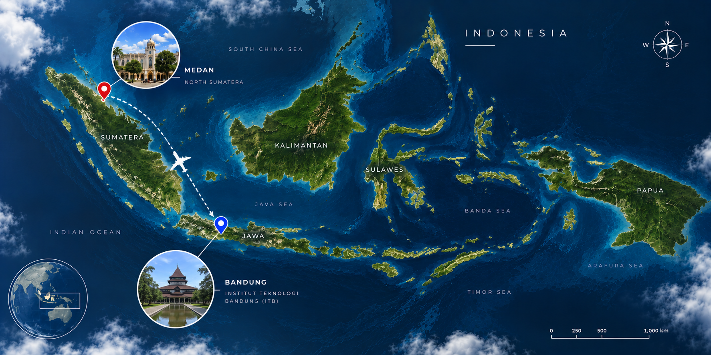

ABOUT ME

- SD 040545 Durin Rugun
- SMP Negeri 1 Lau Baleng
- SMA Negeri 1 Plus Raya
-
Institut Teknologi BandungBachelor of Oceanography

YOSEFHA BR SEBAYANG
West Java, Indonesia | +6285831004203 | yosefhasebayang@gmail.com | linkedin.com/in/yosefha-br-sebayangFresh graduate in Oceanography from Bandung Institute of Technology (ITB) with hands-on experience in metocean analysis, hydrodynamic and wave numerical modelling, and marine data processing. Experienced in developing, calibrating, and validating hydrodynamic and wave models using MIKE21 HD/SW, SWAN, and ADCIRC, with experience working with wave, current, tidal, atmospheric, and bathymetric datasets. Skilled in scientific data processing and quantitative analysis using Python and MATLAB, as well as geospatial and bathymetric data processing using QGIS and ArcGIS. Experienced in model validation using observational and reanalysis data, with a strong interest in metocean forecasting, ocean current and wave analysis, and data-driven solutions for offshore and marine operations.